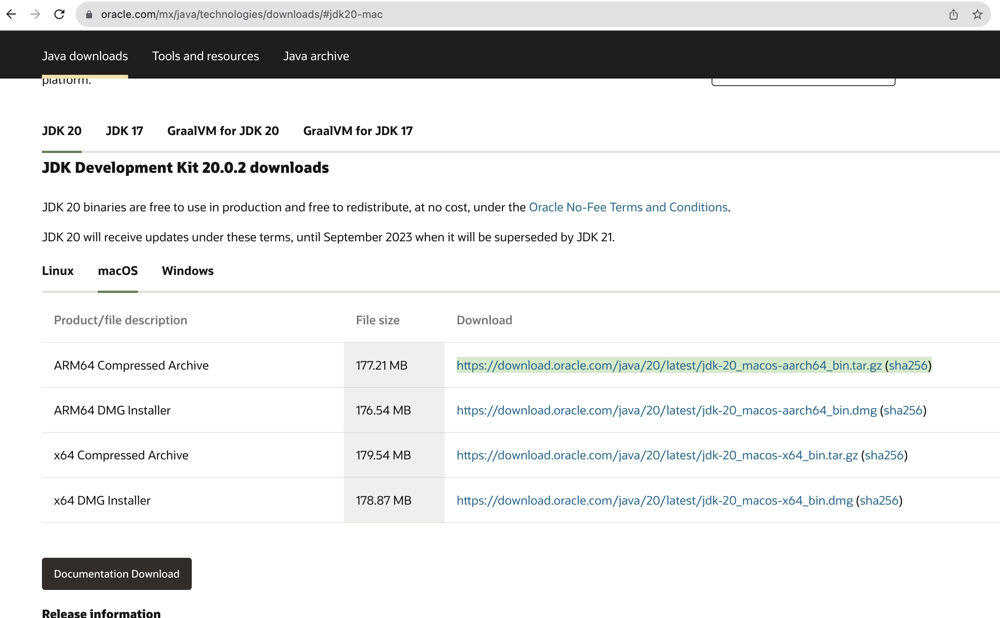

Programming and setup
Overview
What is programming?
Programming is the process of designing and writing a program that, after the compilation process, can be read and executed by a computer in order to obtain some specific result or perform some specialized task.
What is java?
Java is an object-oriented programming language that produces software for multiple platforms.
How do to begin?
To begin programming, we first need a tool to write our code. There are several IDE (Integrated Development Environment) that we can use to write our code. However, we will be using a code editor named Visual Studio Code, which is used widely by many programmers. Aditionally, we will need to instal the Java Development Kit (JDK) in order to develop, test and run java programs.
Installation
JDK
Go to: https://www.oracle.com/mx/java/technologies/downloads/#jdk20
Select your operating system and download the JDK.
{kind=link}
To verify that the JDK was installed correctly, open a terminal(Mac)/command prompt(Windows) and type the following command:
java -version
If the JDK was installed correctly, you will see a similar message:
java version "18.0.2" 2022-07-19
{kind=link}
VSCode Go to: https://code.visualstudio.com/download
Download the version that corresponds to your operating system.
Once it is downloaded, go to the extensions section to install the following tools:
Extension Pack for java
Debugger for java
Test runner for java
{kind=link}